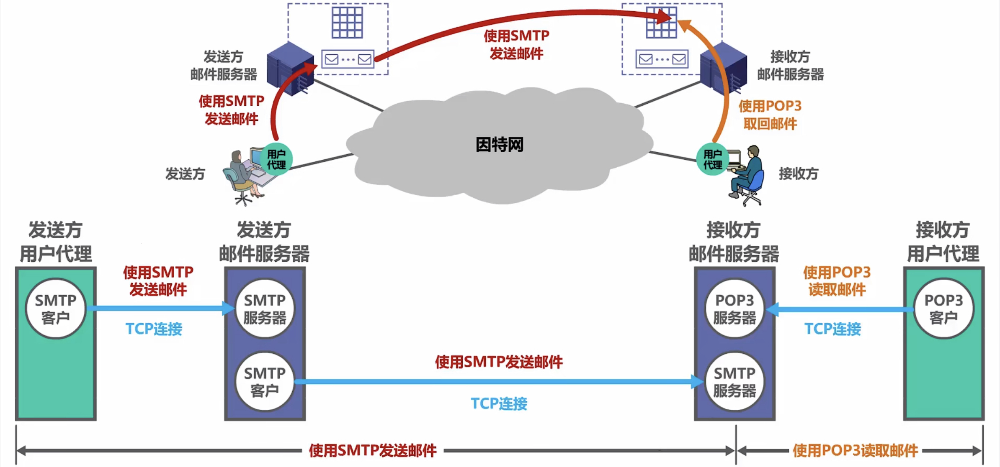
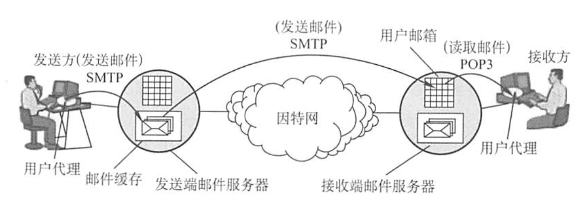
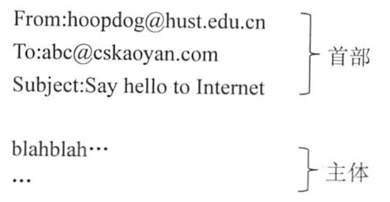
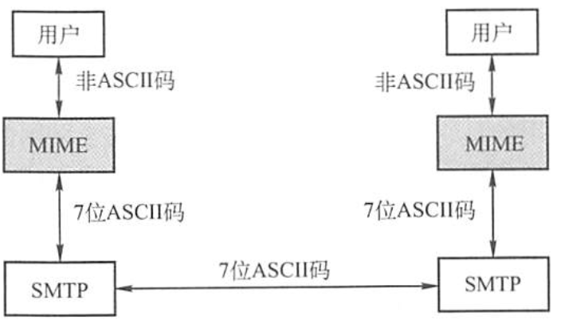
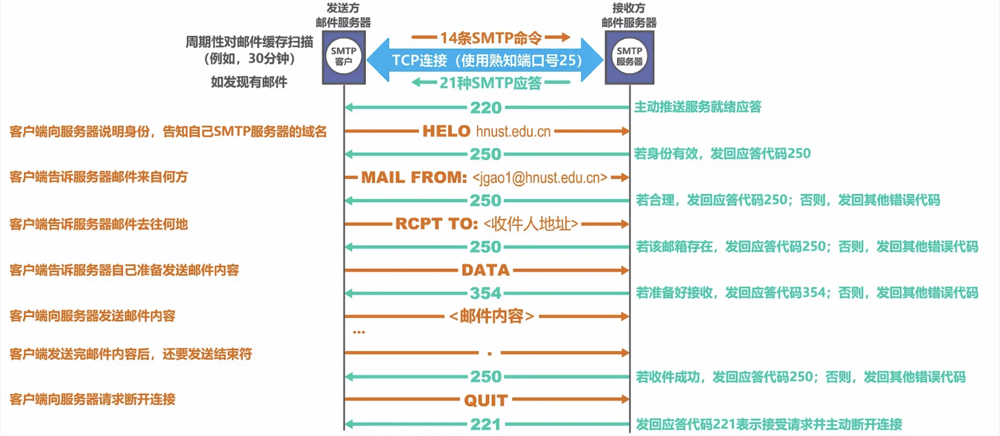
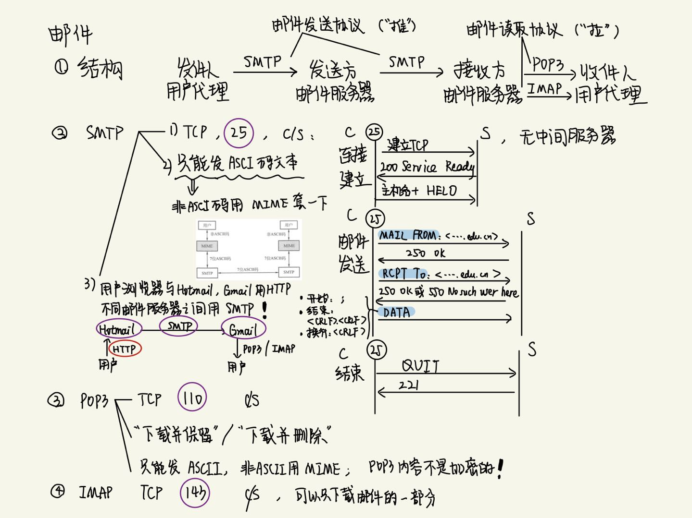

2022.08.17
[toc]
自从有了因特网，电子邮件就在因特网上流行起来。电子邮件是一种异步通信方式，通信时不需要双方同时在场。电子邮件把邮件发送到收件人使用的邮件服务器，并放在其中的收件人邮箱中，收件人可以随时上网到自己使用的邮件服务器进行读取。一个电子邮件系统应具有如图所示的三个最主要的组成构件，即用户代理(User Agent)、邮件服务器和电子邮件使用的协议，如SMTP、POP3(或IMAP)等。

用户代理(UA):用户与电子邮件系统的接口。用户代理向用户提供一个很友好的接口来发送和接收邮件，用户代理至少应当具有撰写、显示和邮件处理的功能。通常情况下，用户代理就是一个运行在PC上的程序（电子邮件客户端软件），常见的有Outlook和Foxmail等。
邮件服务器：它的功能是发送和接收邮件，同时还要向发信人报告邮件传送的情况（已交付、被拒绝、丢失等)。邮件服务器采用客户/服务器方式工作，但它必须能够同时充当客户和服务器。
例如，当邮件服务器A向邮件服务器B发送邮件时，A就作为SMTP客户，而B是SMTP服务器；反之，当B向A发送邮件时，B就是SMTP客户，而A就是SMTP服务器。
邮件发送协议和读取协议：邮件发送协议用于用户代理向邮件服务器发送邮件或在邮件服务器之间发送邮件，如SMTP；邮件读取协议用于用户代理从邮件服务器读取邮件，如POP3。
注意，SMTP用的是“推”(Push)的通信方式，即用户代理向邮件服务器发送邮件及在邮件服务器之间发送邮件时，SMTP客户将邮件“推”送到SMTP服务器。而POP3用的是“拉”(Pul)的通信方式，即用户读取邮件时，用户代理向邮件服务器发出请求，“拉”取用户邮箱中的邮件。电子邮件的发送、接收过程可简化为如图所示。

下面简单介绍电子邮件的收发过程。
一个电子邮件分为信封和内容两大部分，邮件内容又分为首部和主体两部分。RFC 822 规定了邮件的首部格式，而邮件的主体部分则让用户自由撰写。用户写好首部后，邮件系统自动地将信封所需的信息提取出来并写在信封上，用户不需要亲自填写信封上的信息邮件内容的首部包含一些首部行，每个首部行由一个关键字后跟冒号再后跟值组成。有些关键字是必需的，有些则是可选的。最重要的关键字是 To 和 Subject。 To 是必需的关键宇，后面填入一个或多个收件人的电子邮件地址。电子邮件地址的规定格式为：收件人邮箱名@邮箱所在主机的域名，如 abc@cskaoyan.com，其中收信人邮箱名即用户名，abe 在cskaoyan.com 这个邮件服务器上必须是唯一的。这也就保证了 abc@cskaoyan.com 这个邮件地址在整个因特网上是唯一的。 Subject 是可选关键字，是邮件的主题，反映了邮件的主要内容。当然，还有一个必填的关键宇是 From，但它通常由邮件系统自动填入。首部与主体之间用一个空行进行分割。典型的邮件内容如下：

由于SMTP只能传送一定长度的ASCII码邮件，许多其他非英语国家的文字（如中文、俄文，甚至带重音符号的法文或德文)就无法传送，且无法传送可执行文件及其他二进制对象，因此提出了多用途网络邮件扩充(Multipurpose Internet Mail Extensions,MIME)。
MIME并未改动SMTP或取代它。MIME的意图是继续使用目前的格式，但增加了邮件主体的结构，并定义了传送非ASCⅡ码的编码规则。也就是说，MIME邮件可在现有的电子邮件程序和协议下传送。MIME与SMTP的关系如图所示。

MIME主要包括以下三部分内容：
① 5个新的邮件首部字段，包括MIME版本、内容描述、内容标识、传送编码和内容类型。
② 定义了许多邮件内容的格式，对多媒体电子邮件的表示方法进行了标准化。
③ 定义了传送编码，可对任何内容格式进行转换，而不会被邮件系统改变。
简单邮件传输协议(Simple Mail Transfer Protocol,SMTP)是一种提供可靠且有效的电子邮件传输的协议，它控制两个相互通信的SMTP进程交换信息。由于SMTP使用客户/服务器方式，因此负责发送邮件的SMTP进程就是SMTP客户，而负责接收邮件的SMTP进程就是SMTP服务器。SMTP用的是TCP连接，端口号为25。SMTP通信有以下三个阶段。
发件人的邮件发送到发送方邮件服务器的邮件缓存中后，SMTP客户就每隔一定时间对邮件缓存扫描一次。如发现有邮件，就使用SMTP的熟知端口号(25)与接收方邮件服务器的SMTP服务器建立TCP连接。连接建立后，接收方SMTP服务器发出220 Service ready(服务就绪)。然后SMTP客户向SMTP服务器发送HELO命令，附上发送方的主机名。
SMTP不使用中间的邮件服务器。TCP连接总是在发送方和接收方这两个邮件服务器之间直接建立，而不管它们相隔多远，不管在传送过程中要经过多少个路由器。当接收方邮件服务器因故障暂时不能建立连接时，发送方的邮件服务器只能等待一段时间后再次尝试连接。
连接建立后，就可开始传送邮件。邮件的传送从MAIL命令开始，MAIL命令后面有发件人的地址。如MAIL FROM:<hoopdog(@hust.edu.cn>。若SMTP服务器已准备好接收邮件，则回答250OK。接着SMTP客户端发送一个或多个RCPT(收件人recipient的缩写)命令，格式为RCPT TO:<收件人地址>。每发送一个RCPT命令，都应有相应的信息从SMTP服务器返回，如250 OK 或 550 No such user here(无此用户)。
RCPT命令的作用是，先弄清接收方系统是否已做好接收邮件的准备，然后才发送邮件，以便不至于发送了很长的邮件后才知道地址错误，进而避免浪费通信资源。获得OK的回答后，客户端就使用DATA命令，表示要开始传输邮件的内容。正常情况下，SMTP服务器回复的信息是354 Start mail input;:end with\<CRLF>.\<CRLF>。\<CRLF>表示回车换行。此时SMTP客户端就可开始传送邮件内容，并用\<CRLF>.\<CRLF>表示邮件内容的结束。
邮件发送完毕后，SMTP客户应发送QUIT命令。SMTP服务器返回的信息是221（服务关闭)，表示SMTP同意释放TCP连接。邮件传送的全部过程就此结束。

邮局协议(Post Office Protocol,POP)是一个非常简单但功能有限的邮件读取协议，现在使用的是它的第3个版本POP3。POP3采用的是“拉”(Pull)的通信方式，当用户读取邮件时，用户代理向邮件服务器发出请求，“拉”取用户邮箱中的邮件。POP3也使用客户服务器的工作方式，在传输层使用TCP,端口号为110。接收方的用户代理上必须运行POP客户程序，而接收方的邮件服务器上则运行POP服务器程序。POP有两种工作方式：“下载并保留”和“下载并删除”。在“下载并保留”方式下，用户从邮件服务器上读取邮件后，邮件依然会保存在邮件服务器上，用户可再次从服务器上读取该邮件：而使用“下载并删除”方式时，邮件一旦被读取，就被从邮件服务器上删除，用户不能再次从服务器上读取。
另一个邮件读取协议是因特网报文存取协议(IMAP),它比POP复杂得多，IMAP为用户提供了创建文件夹、在不同文件夹之间移动邮件及在远程文件夹中查询邮件等联机命令，为此IMAP服务器维护了会话用户的状态信息。IMAP的另一特性是允许用户代理只获取报文的某些部分，例如可以只读取一个报文的首部，或多部分MIME报文的一部分。这非常适用于低带宽的情况，用户可能并不想取回邮箱中的所有邮件，尤其是包含很多音频或视频的大邮件。
此外，随着万维网的流行，目前出现了很多基于万维网的电子邮件，如Hotmail、Gmail等。这种电子邮件的特点是，用户浏览器与Hotmail或Gmail的邮件服务器之间的邮件发送或接收使用的是HTTP, 而仅在不同邮件服务器之间传送邮件时才使用SMTP。
A.HTTP
B.POP3
C.P2P
D.SMTP
【答案】: A
A.由客户端而非服务器选择接收后是否将邮件保存在服务器上
B.登录到服务器后，发送的密码是加密的
C.协议是基于ASCⅡ码的，不能发送二进制数据
D.一个账号在服务器上只能有一个邮件接收目录
【答案】：B。POP3协议在传输层是使用明文来传输密码的，并不对密码进行加密。所以B选项错误。POP3协议基于ASCI码，如果要传输非ACSⅡ码的数据，那么要使用MIME将数据转换成ASCII码形式。
参考课程：
